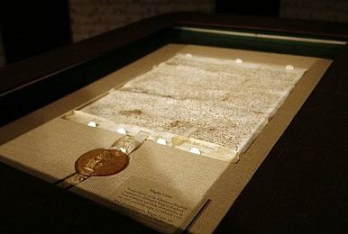

Home
About
Background
US Constitution
British Governing Documents
Governing Systems
Conclusion
Citations
Despite England being the scene of many tyrannies throughout its history, they were also the first nation to limit the powers of the government. "This document limited the monarchy's power by helping establish the rule of law" (Kelman 1999, 22). This happened through a famous document called The Magna Carta which was a charter agreed by King John of England at Runnymede, on 15 June 1215. Many of the rights and liberties stated in the Constitution can be traced back to the Magna Carta for example, The Magna Carta ensured protection of church rights, protection from illegal imprisonment, access to swift justice, and limits on taxation and other feudal payments to the King. These protections are strikingly similar to the right of freedom of religion, due process, and habeas corpus, which can be found in the Constitution. The founders knew how important the Magna Carta was and what it stood for but they also realized its flaws and so they added on to it creating even more rights and liberties that the government shall not infringe upon like, unreasonable searches and seizures, soldier quartering in your home, cruel and unusual punishments, and the right of trial by jury. All in all the Magna Carta was a significant British document that influenced the Founding Fathers to create a limited government in America. Some other influential governing documents that the British adopted and were greatly used by american government were the English Bill of Rights and The Petition of Rights. The English Bill of Rights was enacted on December 16, 1689. It was remarkably similar to our Bill of Rights because the Bill of rights in the US Constitution was heavily influenced by the English Bill of Rights. For example, the English Bill of Rights created separation of powers, limited powers of the king and queen, enhanced democratic election, and bolstered freedom of speech. Many of these concepts can be found in our very own Bill of Rights within the constitution. While the English Bill of Rights does an okay job to limit government power, the US Bill of Rights does a better job by listing out the various liberties and rights that the government cannot take away from a citizen. The Petition of Rights was enacted on 7 June 1628 in response to King Charles’s overreaching power on his subjects. It further bolstered the Magna Carta and implemented habeas corpus. Habeas corpus is the right to a fair and speedy trial under the law. King charles openly denied to try people in a court and would throw them in jail at his own will. Habeas corpus was a major step in limiting the government's power and ensuring the rights of the people.
